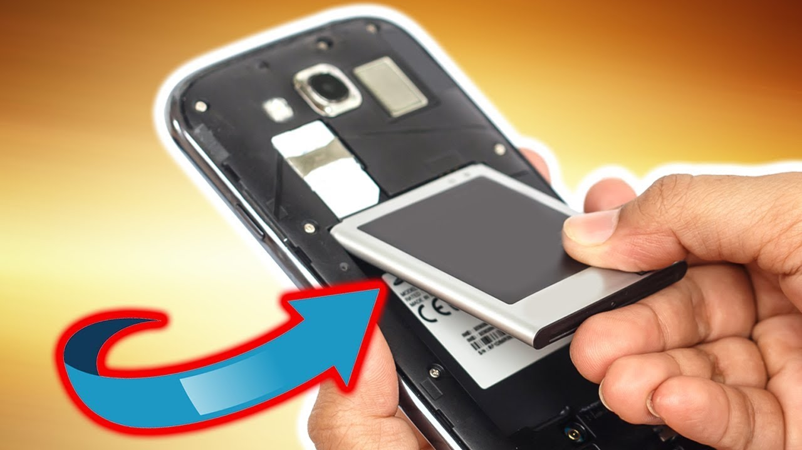

Even over the past year, typical battery capacities in flagship phones have increased from 3,300mAh to around 3,500mAh.
iPhones remain notably behind Android when it comes to battery size.
Minimum battery capacities have improved much more than the maximum capacities.
mAh: The A is capitalized because, under the International System of Units, ampere is always represented with a capital A. The term mAh is an abbreviation for milliampere hour, and it’s a way to express the electrical capacity of smaller batteries. With larger batteries, like car batteries, we usually use ampere hours, or Ah. There are 1000 mAh in a single Ah.
mAh is calculated by multiplying the amount of time the battery lasts by the amperes of the discharge current. That may sound complicated, but it’s really not. If you have a battery and you don’t know what it’s capacity it is, all you have to do is hook it up to supply a 1000 mA discharge and see how long it lasts. If it lasts an hour, hey, you’ve got a 1000mAh battery. If it lasts 7 and a half hours, well then you’re holding a 7500mAh battery.
In real life, discharge rates vary not only from device to device, but also user to user. How efficiently your smartphone manages its battery power plays a role, but so too does the amount of active screen time you typically experience as well as how resource-hungry your apps are.
So, while the mAh can give you a reasonably good idea about how long a battery will last, the figure doesn’t tell the whole story. That’s why it’s always a good idea to check reviews and see what other users’ experiences have been like before buying a smartphone.
Before fast charging, there was normal charging or what others will call slow charging.
For fast charging to work your phone or device must support fast charging. Connecting a fast charger to a phone that doesn’t support fast charge is not going to charge it fast.
To put it simply, fast charging pumps more electricity than normal to charge your phone. Normal charging just pumps the required amount of electricity to charge your phone. That’s the difference.
Fast charging becomes similar to normal charging when the charging reaches the later stages.
In the later stages, the voltage or current drops and achieves a constant value. Your device then charges slowly until it reaches full capacity.
You can verify this yourself. If you use a device with fast charging capabilities. You will notice that getting it to 60 or 80 per cent don’t take a lot of time. But getting it to 100 per cent takes quite some time.
That’s the charger achieving its constant voltage. It serves as a safety mechanism. Too much current and your battery will get damaged.
Fast charging itself doesn’t affect battery life. But, it is the heat produced during fast charging that affects battery life. When the heat becomes too much the battery will slowly get damaged over time.
Fortunately, current smartphones have safety mechanisms in place to protect the battery.
The mechanism works in such a way when the upper limit of appreciable temperature is reached.
The voltage or current during the fast charging process is reduced. This results in a drop in temperature.
But even with the safety mechanisms, your battery will run hot during a fast charge session.
This will over time will slowly affect your battery life.
Phones with wireless charging are cool. They save you the hassle of dealing with cables — just drop your phone on a pad and watch everything light up.
There are a few drawbacks to keep in mind: wireless charging usually takes longer than using a cable and makes phones difficult to use while charging.
Wireless charging is also mainly available on high-end phones with glass backs — metal and wireless charging don’t mix. Not every flagship has the technology, but more and more manufacturers are hopping on the bandwagon. Phones with the feature either support the PMA or Qi standard, although Qi is the more popular choice.
Here are the best phones with wireless charging capabilities.
Best phones with wireless charging:
1. Samsung Galaxy S20 series
2. Google Pixel 4/4XL
3. Samsung Galaxy Note 10/Plus
They not only sport 15W wireless charging, but reverse wireless charging as well, which is ideal for keeping the battery of wireless headphones and smartwatches full on the go. But this is far from the only thing that makes the latest Samsung high-end devices special.
4. LG V60 ThinQ
5. Xiaomi Mi 9
6. LG G8X
7. Huawei P30
8. ZTE Axon 10 Pro
Back in the modern smartphone’s formative years, it was pretty easy to find a device with a removable battery. But the trend towards unibody, sealed designs means you’ll actually struggle to find a phone with this feature today.
